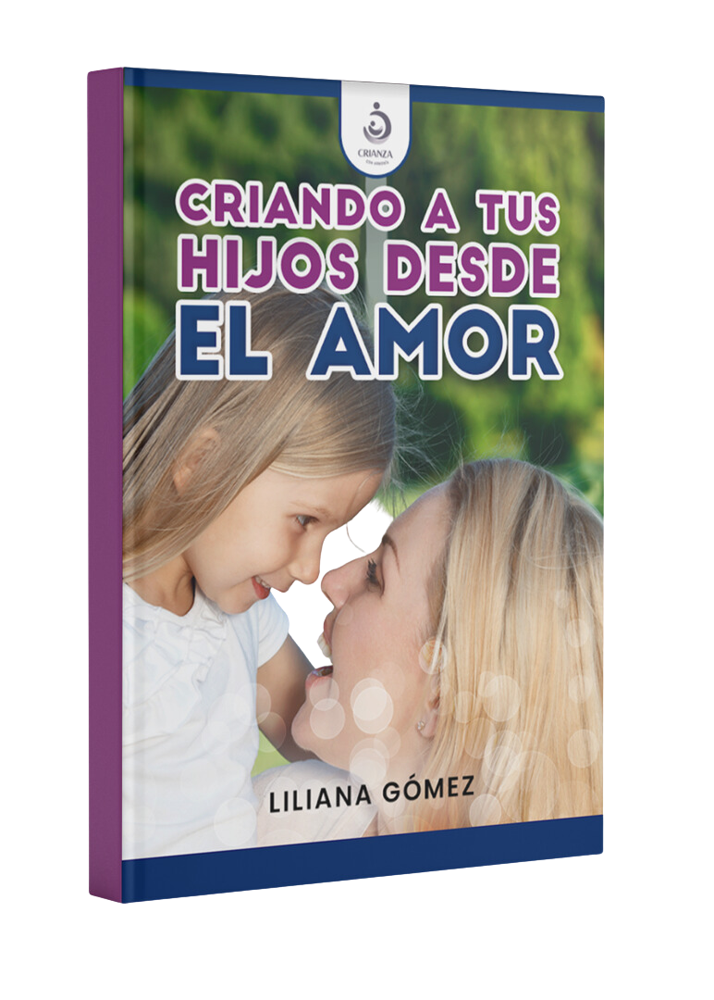
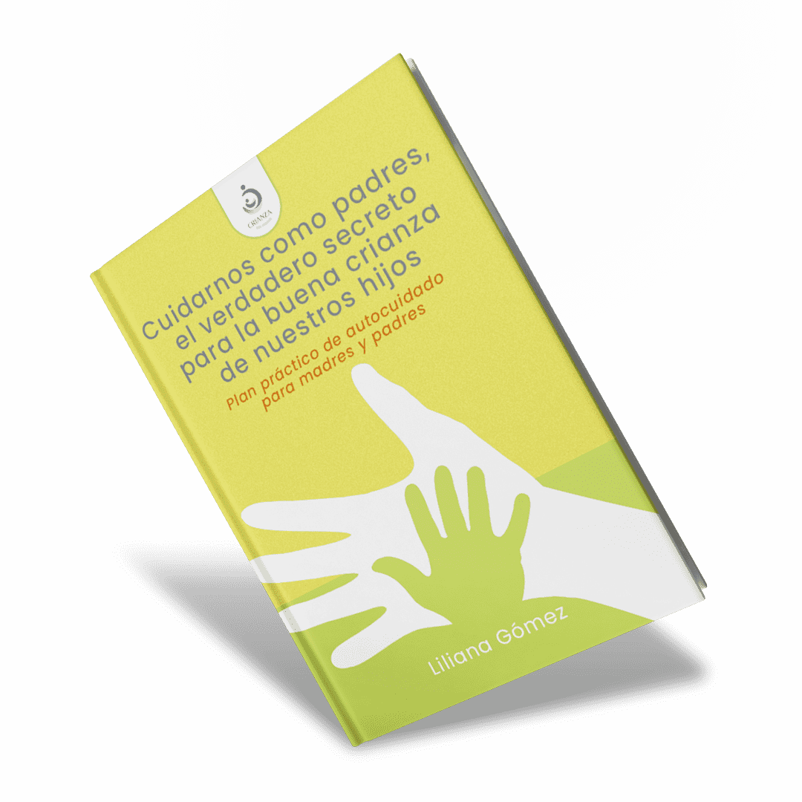
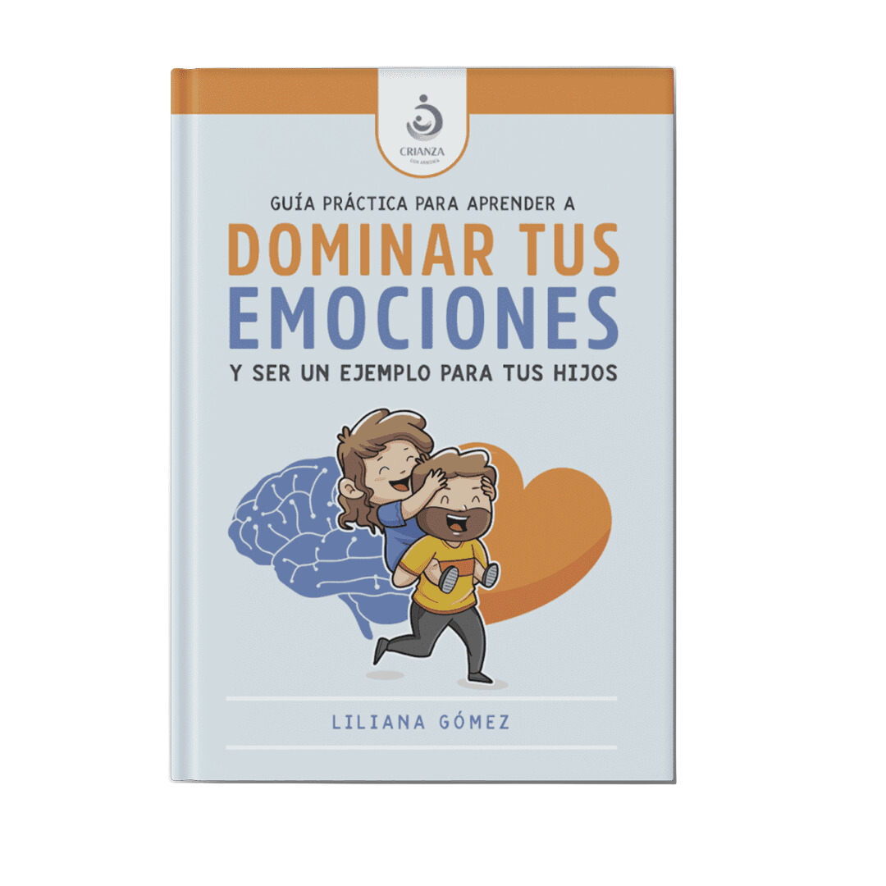
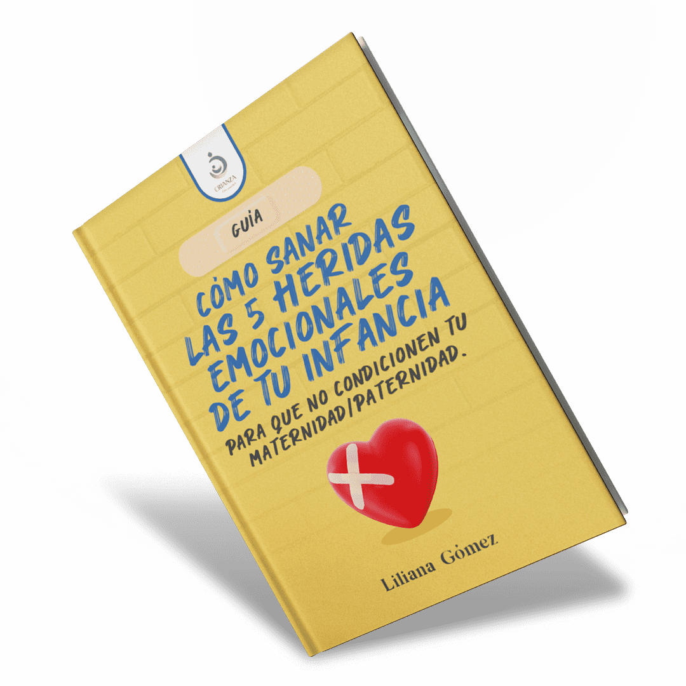
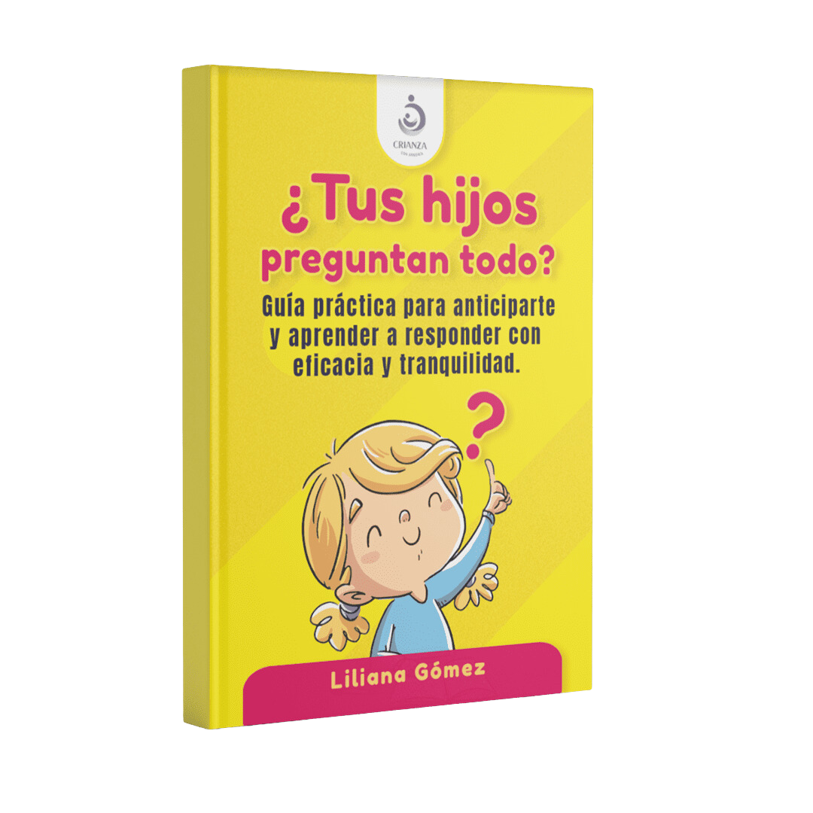
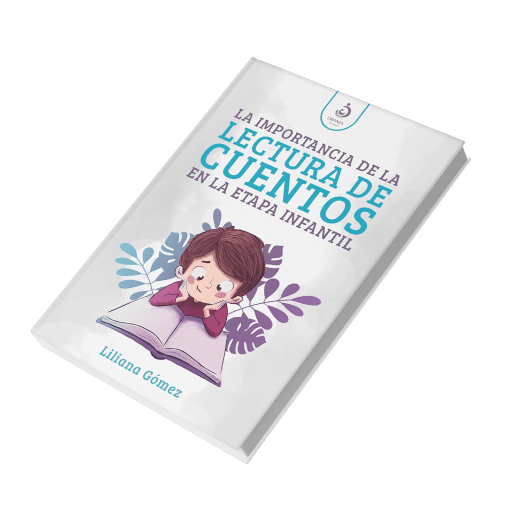

En esta página, podrás explorar nuestra colección de ebooks diseñados para apoyar a madres y padres en su camino hacia una crianza respetuosa y amorosa. Descubre las guías, creadas con base en la experiencia y conocimiento profesional, y encuentra el recurso perfecto para tus necesidades.
La crianza de un hijo es un arte lleno de amor y desafíos. En estos tiempos de constante cambio, madres y padres buscan criar a sus hijos de la mejor manera posible, aspirando a que sean personas saludables, felices y preparadas para el futuro. Sin embargo, muchos de nosotros comenzamos este viaje sin estar completamente preparados.
En esta guía, encontrarás recursos esenciales para afrontar los desafíos de la crianza, comprender cómo piensan y sienten los niños, y desarrollar habilidades específicas que aumentarán tus probabilidades de éxito. "Crianza con Armonía" ofrece 10 razones fundamentales para preocuparse por la crianza de tus hijos, abarcando desde establecer vínculos significativos y desarrollar la confianza en sí mismos, hasta enseñarles a gestionar sus emociones y fomentar la resiliencia.
Explora estrategias prácticas y consejos basados en experiencias reales para transformar tu relación con tus hijos y disfrutar de una crianza más armoniosa.
PROMOCIÓN EBOOK + 5 BONUS

Te presento mi ebook donde te brindo consejos, recursos, estrategias que te ayudarán a criar a tus hijos desde el amor de forma efectiva y positiva.
Esto es lo que aprenderás:
Educar desde el amor y respeto, basados en los principios del buen trato con sugerencias específicas.
Comprender la importancia de establecer normas y límites eficaces; los límites con firmeza y amabilidad, dan seguridad a los niños (as), los organiza y el sostenerlos en el tiempo los ayuda a afianzar buenos hábitos.
Conocer los estilos educativos (autoritario, permisivo y democrático); conocer cuál es el que predomina en tu familia, tomar consciencia y si es necesario adoptar el más adecuado para criar hijos (as) confiados, autónomos, con capacidad para creer en sí mismos y resolver problemas acordes a su edad, enfocados en soluciones.
Enseñar a gestionar las emociones a tus hijos (as) para que progresivamente puedan auto regularse y responder de la mejor manera cuando se les presenta un desafío que le genera frustración, enojo.

BONUS #1: Cómo sanar las 5 heridas emocionales de tu infancia para que no condicionen tu maternidad/paternidad.
Nuestra infancia es tan importante que las experiencias vividas en ella determinan nuestra calidad de vida cuando somos adultos.
Son 5 heridas emocionales de la infancia que dejan huella en la edad adulta. Conocerlas es fundamental para poder sanarlas.
Este bonus explica cuáles son las cinco heridas emocionales de la infancia, cómo se generan, en qué consisten, y se brindan orientaciones para sanarlas y evitar que las sufran nuestros hijos (as).
BONUS INCLUIDO

BONUS #2: Guía práctica para aprender a dominar tus emociones y ser un ejemplo
para tus hijos.
Las emociones juegan un papel muy importante en las conductas de nuestros hijos (as), por lo que es fundamental, enseñarles a gestionarlas. Es de vital importancia que como ejemplos de nuestros hijos(as), nosotros madres y padres, respondamos de forma asertiva y auto regulada controlando nuestras emociones.
Este bonus ofrece una guía para que madres y padres puedan conocer sobre las emociones básicas, la importancia de educar las emociones, cómo contribuir desde nuestro lugar, sugerencias de actividades que benefician el control de emociones propias y el aprendizaje progresivo de nuestros hijos (as).
BONUS INCLUIDO

BONUS #3: Cuidarnos como padres, el verdadero secreto para la buena crianza de nuestros hijos.
Plan práctico de auto cuidado para padres y madres.
Las mamás y papás necesitamos nutrirnos con momentos de autocuidado. Ese tiempo especial para nosotros es esencial para renovarnos y conectar mejor con nuestros hijos (as).
Cuando nos convertimos en madre o padre, es normal sentirse sin tiempo para uno, pero es importante crear momentos que sean propios y recargarnos de energía cada día.
Este bonus explica la importancia del autocuidado, cómo planificarlo y consejos para implementarlo.
BONUS INCLUIDO

BONUS #4: ¿Tus hijos preguntan todo?
Guía práctica para anticiparte y aprender a responder con eficacia y
tranquilidad.
Los niños(as) preguntan todo a mamá y papá, sienten una enorme curiosidad por todas las cosas y esto forma parte del desarrollo evolutivo del niño. ¿Qué hacemos con tantas preguntas?
Este bonus brinda herramientas para poder enfrentar preguntas incómodas de
nuestros hijos (as) como las relacionadas a la sexualidad, la muerte...
Da orientaciones prácticas y claras de qué y cómo responder a preguntas comunes de la infancia.
BONUS INCLUIDO

BONUS #5: La importancia de la lectura de cuentos en la etapa infantil.
Los cuentos aportan valores, entretienen, ayudan al desarrollo de las emociones, permiten momentos mágicos compartidos entre padres e hijos…
Son una de las herramientas más valiosas para la educación de los pequeños. Este bonus explica los beneficios de leer a los niños desde temprana edad, cómo crear el hábito de la lectura y 5 estrategias para potenciar la lectura y el aprendizaje.